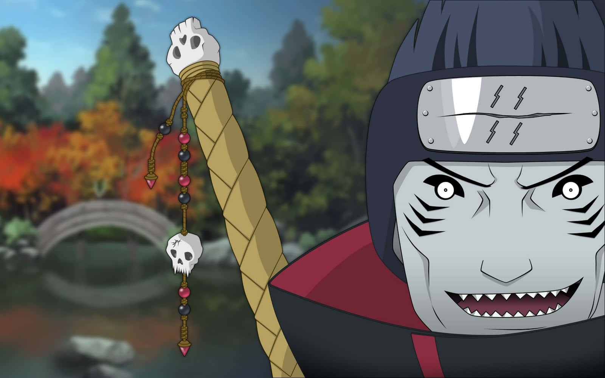

Inicio:
Kisame Hoshigaki (干柿鬼鮫, Hoshigaki Kisame) fue un ninja renegado de Kirigakure y miembro de Akatsuki. Llevaba el anillo "Sur" (南, Nan) en el dedo anular izquierdo. Era conocido como el "Bestia sin Cola" debido a su inmenso chakra y su apariencia similar a un tiburón. Su compañero en Akatsuki fue Itachi Uchiha, con quien formaba un equipo letal.
Historia:
Kisame nació en Kirigakure (Aldea de la Niebla) y fue miembro de los Siete Espadachines de la Niebla. Tras traicionar a su aldea, se unió a Akatsuki, donde encontró un propósito en la misión de la organización. Durante su tiempo en Akatsuki, Kisame participó en la captura de varias bestias con cola, incluyendo al Cuatro Colas.

Kisame murió luchando contra Might Guy, sacrificándose para proteger los secretos de Akatsuki. Aunque fue derrotado, su lealtad y su fuerza lo convirtieron en uno de los miembros más respetados de la organización.

Habilidades:
Kisame era un maestro en técnicas de agua, utilizando habilidades como el Gran Diluvio y el Tiburón de Agua. Además, su espada Samehada absorbía chakra y se fusionaba con su usuario, aumentando su poder y resistencia. Kisame también podía fusionarse con Samehada para convertirse en una criatura similar a un tiburón, lo que lo hacía casi imparable en combate.